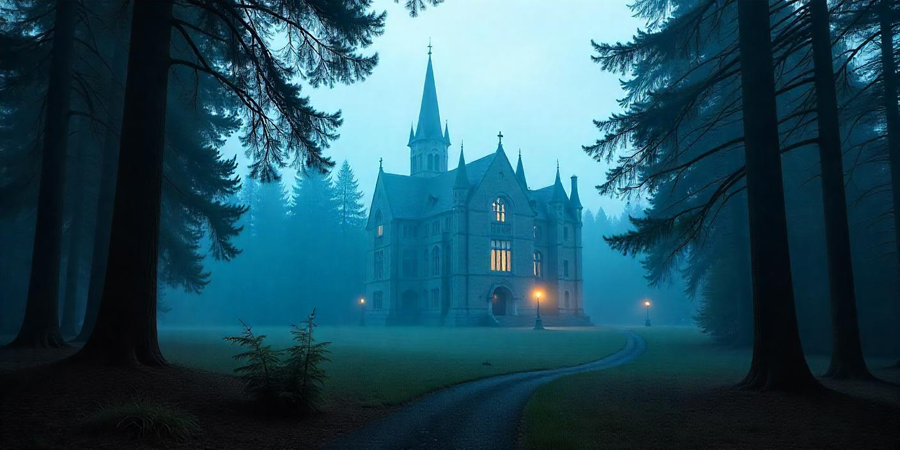
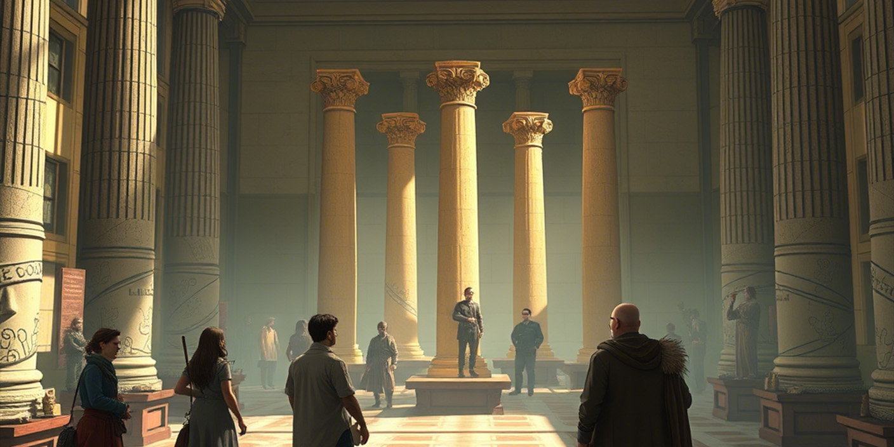
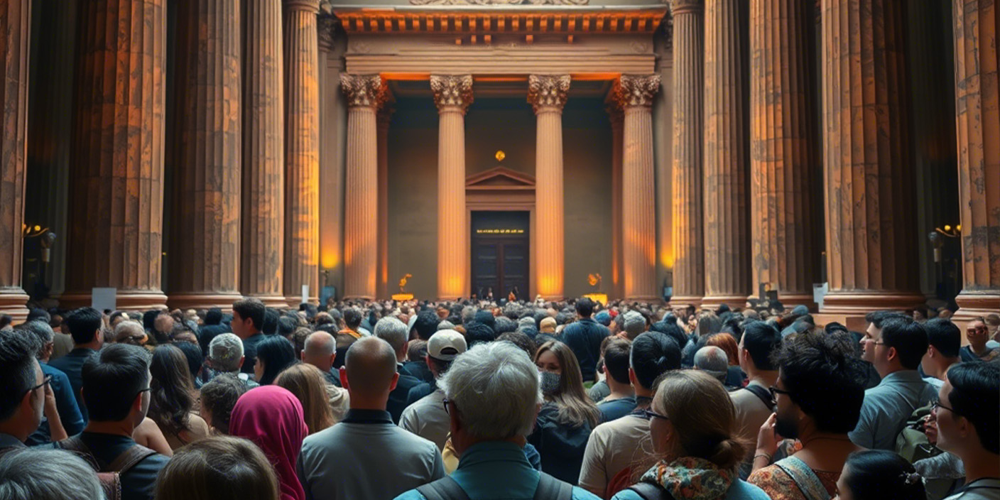

L'Apparition du Musée
L'Origine d'un Monde Nouveau
Le Musée Virtuel n'est pas apparu comme un simple projet,
mais comme une vision, une réponse à un besoin profond d'exploration et de conservation du savoir
dans un espace dématérialisé. Son apparition fut marquée par une énigme, une porte scellée que seuls
les esprits curieux pouvaient ouvrir. Cette approche ludique et mystérieuse a marqué l’histoire de sa
création et a suscité une fascination immédiate chez les explorateurs du numérique.
Lire la suite

L'Architecture du Musée
Une Architecture Sans Précédent
L'architecture du musée s'inspire d'un monde où l'impossible devient réalisable.
Chaque salle est une expérience immersive : des toits flottants aux galeries interactives,
chaque élément a été pensé pour défier les lois physiques tout en offrant une harmonie
visuelle saisissante. L'espace des Toits, par exemple, présente une bibliothèque de
structures suspendues, permettant aux visiteurs de voyager à travers différentes époques
et styles architecturaux en un simple clic.
Lire la suite

Le Choc des Peuples
Le Choc des Peuples et la Réinterprétation de l'Histoire
L'apparition du musée a suscité des réactions diverses.
Certains y ont vu une révolution culturelle, un moyen de transcender les frontières et de redéfinir
l'accès à l'histoire et à l'art. D'autres ont perçu cette dématérialisation comme une rupture avec
l'authenticité du passé, une transformation trop radicale de notre rapport au patrimoine.
Cependant, loin d'effacer l'héritage des civilisations, ce musée virtuel leur offre une nouvelle vie.
Il devient un espace de rencontre entre le passé et le futur, entre les peuples et les époques, ouvrant
des dialogues inédits et des perspectives insoupçonnées.
Lire la suite
Commentaires